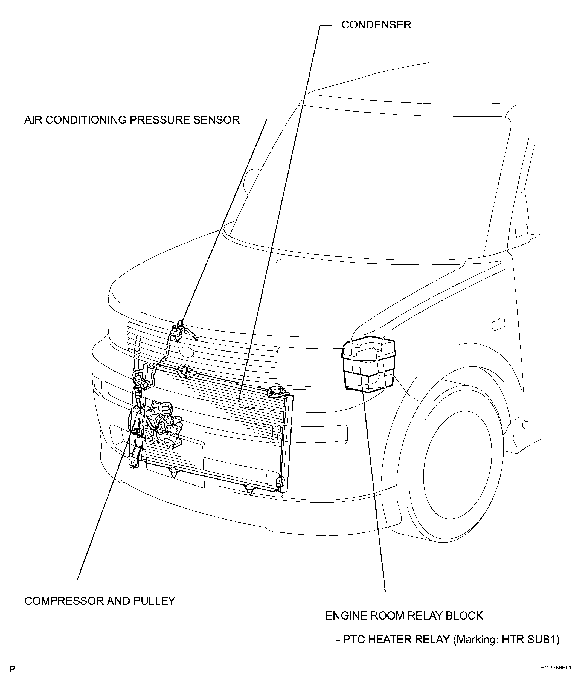
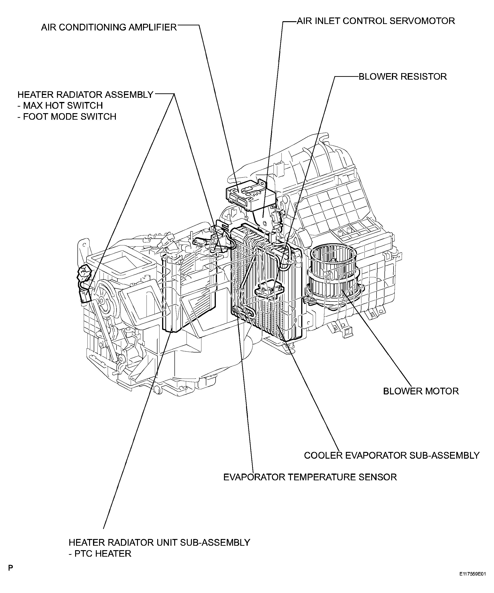

Parts Location
Fig 1: Identifying Air Conditioning System Components (1 Of 3)

Courtesy of © TOYOTA, LICENSE AGREEMENT TMS1002
Fig 2: Identifying Air Conditioning System Components (2 Of 3)
Courtesy of © TOYOTA, LICENSE AGREEMENT TMS1002
Fig 3: Identifying Air Conditioning System Components (3 Of 3)

Courtesy of © TOYOTA, LICENSE AGREEMENT TMS1002
 Courtesy of © TOYOTA, LICENSE AGREEMENT TMS1002Courtesy of © TOYOTA, LICENSE AGREEMENT TMS1002
Courtesy of © TOYOTA, LICENSE AGREEMENT TMS1002Courtesy of © TOYOTA, LICENSE AGREEMENT TMS1002